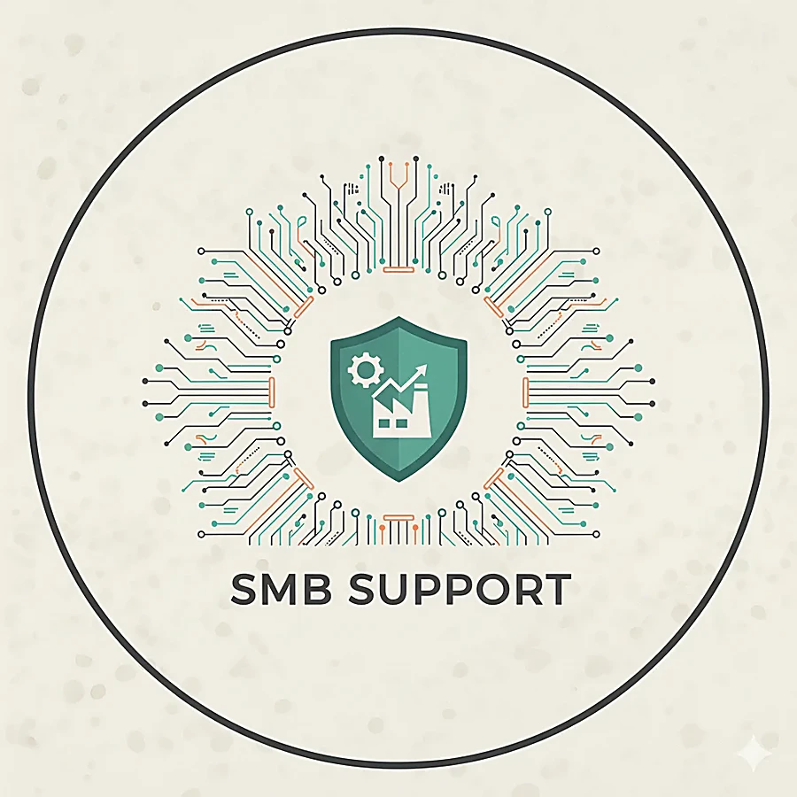
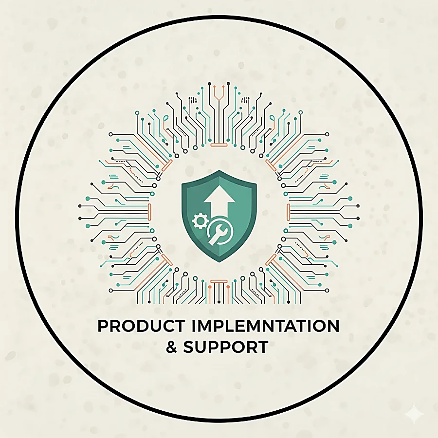

What We Do

Our Services
Three ways we help businesses grow — from strategy through hands-on implementation.

Business Transformation
Digital transformation strategy, legacy modernization, change management, process optimization, and fractional CIO/COO leadership for growing businesses.
Learn more
Laserfiche & Software Implementation
Expert Laserfiche consulting, implementation, and SLA-backed support — plus Google Workspace, Hyland OnBase, DocuSign, OneSpan Sign, Grooper, and AI platform integrations.
Laserfiche services
Consultant Enablement
We power other consulting practices: methodology development, proposal and pricing expertise, technical architecture reviews, and AI strategy behind the scenes.
Learn more